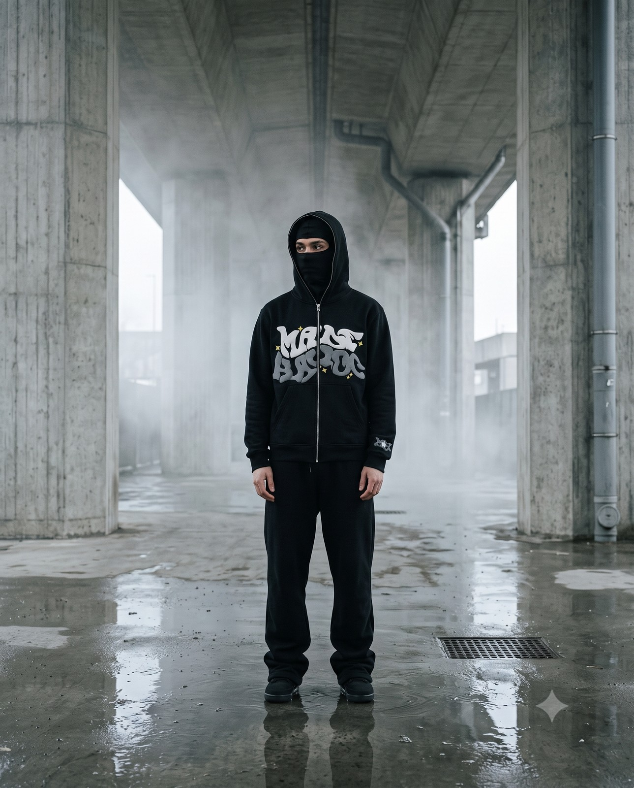
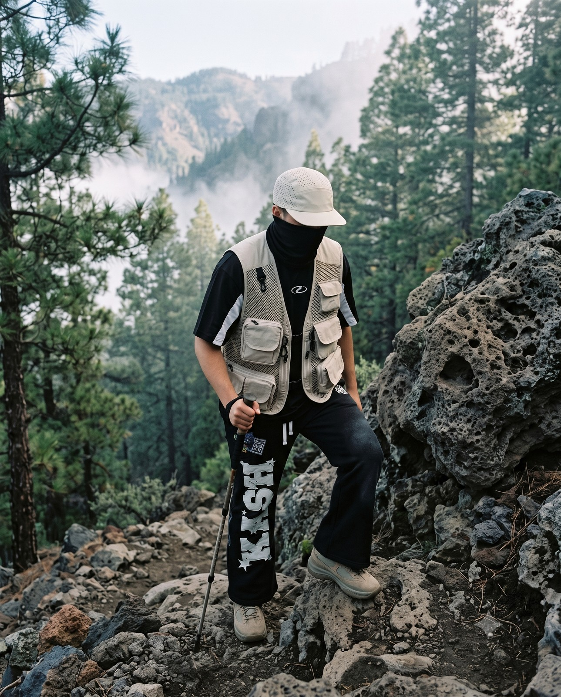
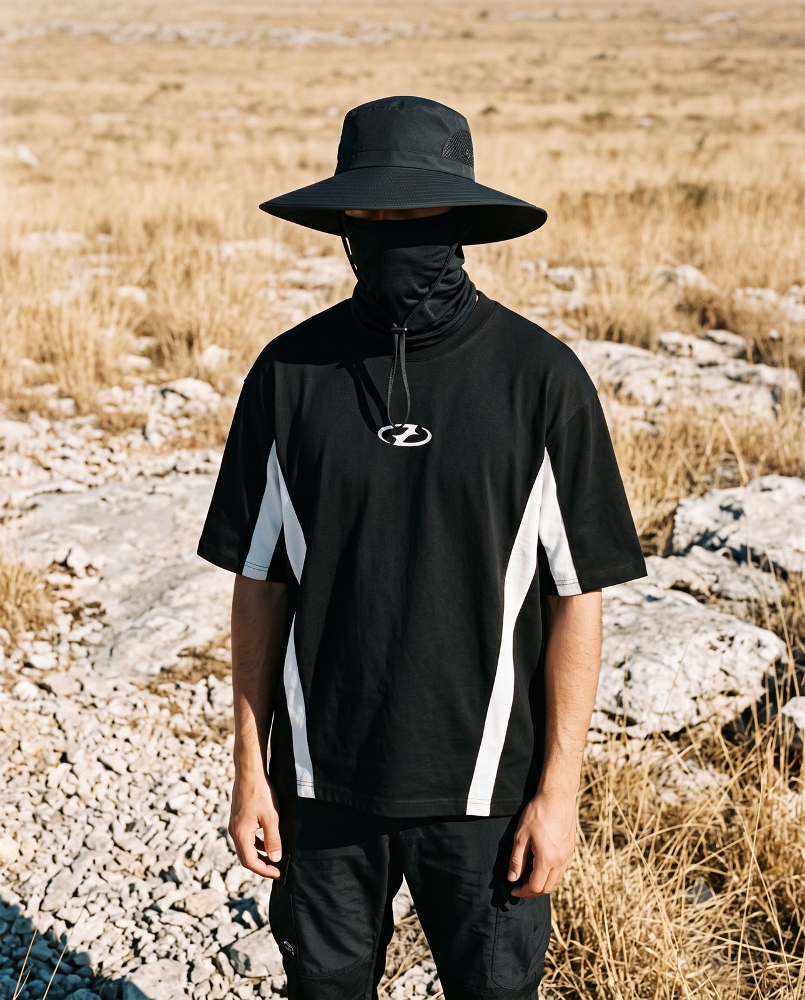
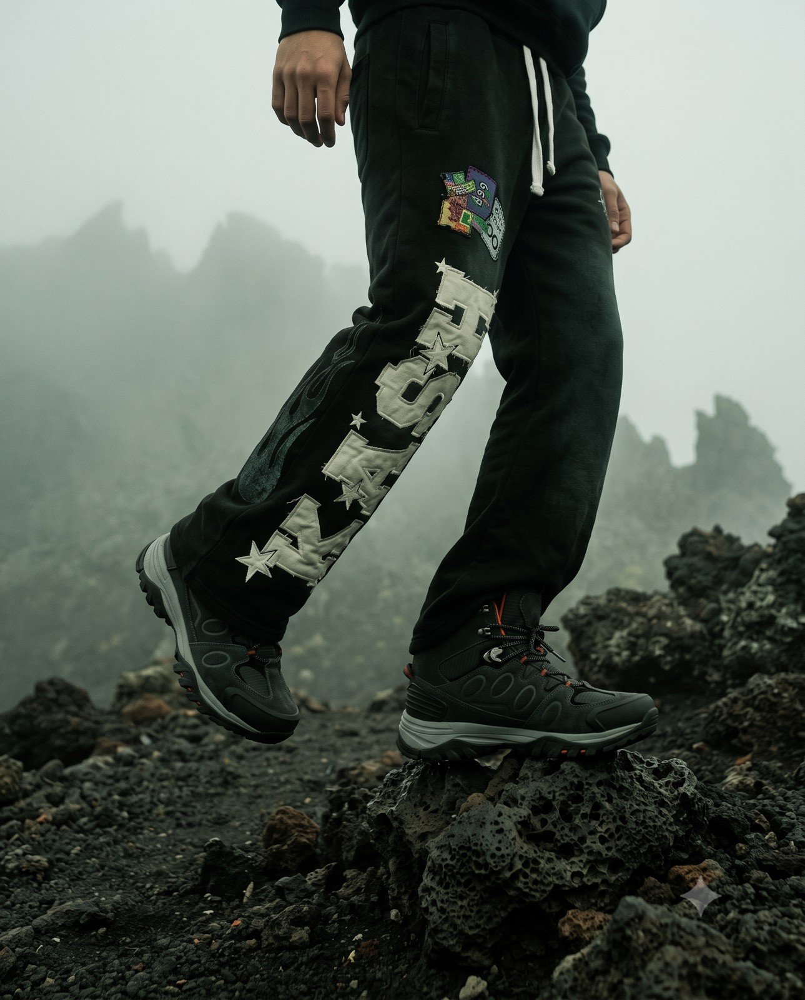

Este documento es la biblia de CAIRN: todo lo que hace que una pieza, una caja o una
foto se sientan de la marca. La prenda llega genérica del proveedor — el sistema que sigue
es lo que se vende. Si algo no está aquí, no es CAIRN.
01 — Manifiesto
Una mojonera no grita. Es un montón de piedras que alguien apiló para decirte
por aquí sí se cruza. CAIRN hace lo mismo con ropa: pocas piezas, numeradas a mano,
sin rostro y sin logo — y cuando la edición se agota, el patrón se retira.
La ciudad es la montaña.
02 — La mojonera · el símbolo
Piedras apiladas, una señal.
SPEC — MARK / CANON
Tinta + ámbar — nada más
SP-01
Tres piedras + la señal
Tres barras redondeadas que se angostan hacia arriba — el montículo. Arriba, un punto ámbar: la única pieza de color del sistema. Nunca se separan.
SP-02
La señal ámbar
El punto es el lente de la figura, el sello del empaque y el acento de la página. Un solo color de acento en toda la marca: si hay dos, uno sobra.
SP-03
Wordmark de museo
CAIRN en Instrument Serif, mayúsculas, tracking abierto (~.14em). Se coloca lejos del símbolo o debajo — nunca encimado.
SP-04
Reducción
A 16 px la mojonera sigue leyéndose: tres barras y un punto. Para favicon y sello se usa sola, sin wordmark.
03 — La figura · sin rostro
No face, no logo.
SPEC — LA FIGURA / CANON
Frontal, nunca de perfil
SP-05
El rostro se cubre
Balaclava, gaiter o la sombra de un ala — la persona desaparece y queda la pieza. En dibujo y en foto, siempre.
SP-06
La banda ámbar
El lente es la señal ámbar puesta en el cuerpo: es lo único que "mira". En looks de foto, los goggles solo aparecen con TALUS.
SP-07
Frontal, no perfil
De perfil la silueta encapuchada lee como pájaro. La figura canon es frontal, hombros anchos, quieta — presencia de monumento.
SP-08
Dibujo de tinta
Los productos se presentan primero como mancha de tinta (feTurbulence) — el catálogo es un cuaderno de campo, la foto real aparece al tocar.
04 — Paleta
Hueso, tinta y una señal.
Hueso#EAE6DF — el papel, dominante
Tinta#141210 — el trazo, texto y dibujo
Ámbar#C96F2B — la señal, único acento
Piedra#6E675E — texto secundario
Noche#16130f — footer y reverso
Regla: hueso de fondo, tinta encima, ámbar una sola vez por vista. Ningún otro color entra al sistema — el color vive en las fotos, no en la interfaz.
05 — Tipografía
Tres voces, un tono.
Display — Instrument Serif
Claim your number. The pattern is retired.
Técnica — IBM Plex Mono
EDITION OF 100 — NEXT Nº 027 FREE TRACKED SHIPPING · 2–4 WEEKS NUMBERED & SIGNED · LAST NUMBERS
Cuerpo — Archivo
Hoodies, heavyweight tees and mountain gear — numbered by hand, in editions of a few. The mountain is the standard; the street is the field.
La serif habla como museo (títulos y nombres), la mono habla como etiqueta de campo (números, specs, chips), Archivo explica. Nunca se mezclan en una misma línea salvo número ámbar dentro de mono.
06 — Voz · cómo habla CAIRN
Voz de museo, datos de campo.
CAIRN no vende con adjetivos — vende con hechos contados en frío: números,
ediciones, materiales, rutas. Frases cortas. Inglés técnico para producto, español para hablar
con la gente. Si suena a anuncio, se corta.
Sí — así habla
"When an edition sells out, the pattern is retired."
Un hecho. La escasez es real y se cuenta como regla, no como urgencia.
Sí — así habla
"No face, no logo — the system starts where you disappear."
La idea central dicha una vez, sin explicarse de más.
Sí — así habla
"Cut, not branded."
Dos palabras que cargan toda la tesis: el corte es la marca.
No — así no
"¡La mejor calidad al mejor precio! 🔥🔥"
Ni signos de exclamación, ni emojis, ni superlativo vacío. Nunca.
No — así no
"Compra YA, quedan pocas horas."
La urgencia de CAIRN es el número de edición, no un contador de reloj.
No — así no
"Tejido ultra-premium de grado militar 28K."
Specs inventadas devalúan las reales. Solo datos verificables del listing.
07 — Ediciones · el ritual comercial
Cada pieza tiene un número.
EDITION OF 100NEXT Nº 027
26 CLAIMED74 NUMBERS LEFT
Claim Nº 027 — $59 →
R-01Comprar se dice "claim". No agregas al carrito una prenda: reclamas un número de la edición. El CTA siempre trae el número y el precio.
R-02El número es visible en todo: ficha, hang tag, tarjeta firmada y mensaje de pedido. Nº 037 / 150 — serif para el número, mono para el contexto.
R-03La edición se agota, el patrón se retira. No hay restock, no hay "vuelve pronto". La pieza muere y eso la hace valiosa.
R-04"Last numbers" aparece cuando queda ≤30% — es el único aviso de escasez permitido.
08 — Fotografía · el lookbook
35mm, sin rostro, un clima.

Concreto + niebla — la ciudad

Pino + roca volcánica — la ruta

Sol duro — el campo abierto

Roca volcánica — el suelo
Reglas: rostro cubierto siempre (balaclava, gaiter o ala) · goggles solo con TALUS · película 35mm, grano sutil · paleta desaturada, un clima por foto · vertical 4:5 · las prendas se copian fieles del producto real · sin textos ni logos añadidos.
09 — Texturas · el papel
Todo vive sobre papel.
Halftone
Puntos de medio tono multiplicados sobre el hueso — la página se siente impresa, no renderizada.
Mancha de tinta
feTurbulence + displacement: los bordes tiemblan como tinta sobre papel húmedo. Así se dibujan productos y símbolos.
La cordillera
La banda de montañas de tinta divide secciones y firma la parte baja de cajas y tarjetas — la ruta siempre presente.
CAIRN.
El reverso noche
Footer, poly mailer y tarjeta de edición invierten el papel: tinta de fondo, hueso encima, la señal intacta.